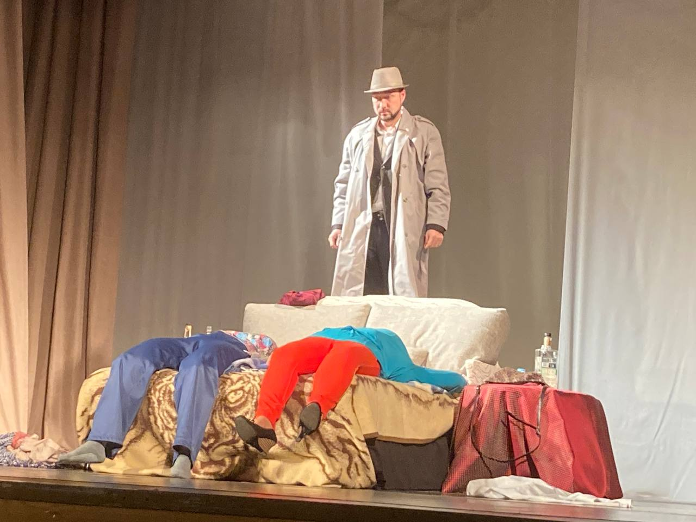
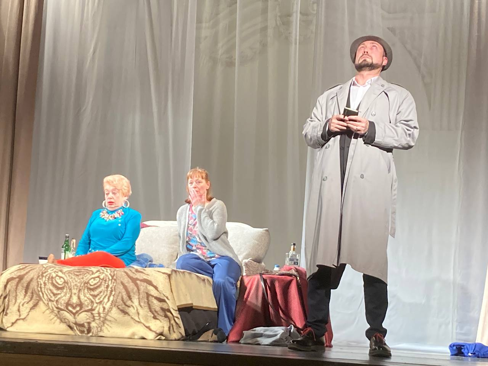
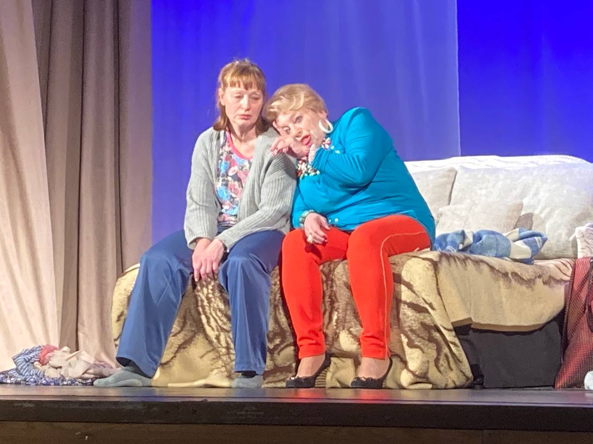

Есть ли на свете нечто, более вечное и прочное, чем "заклятая" женская дружба?
В одной московской квартире встретились две подруги — две одинокие женщины Элла и Кира.
Кира, недавно потерявшая мужа, практически не выходит из своей квартиры и только смотрит дни напролет сериал про лейтенанта Коломбо. Элла же, в отличие от подруги, не унывает и все ещё надеется найти свое женское счастье.
И, вроде бы, кроме друг друга, никого у женщин не осталось, им давно нечего делить, а все же есть между ними невысказанные обиды и старые тайны, из-за которых их дружба порой грозит обернуться ненавистью...


